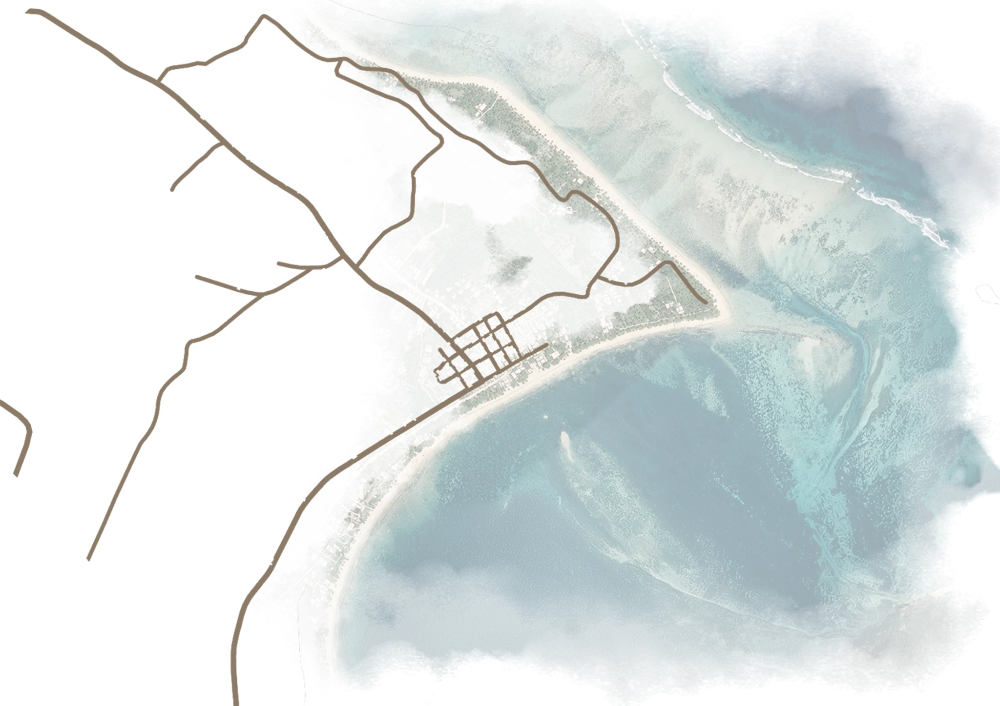
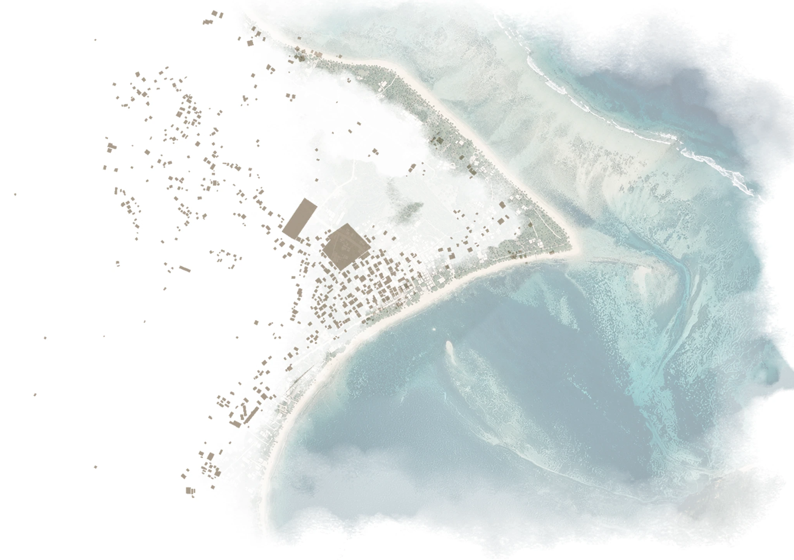
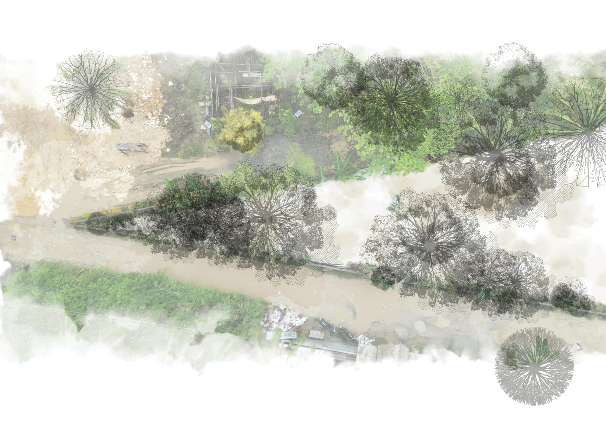
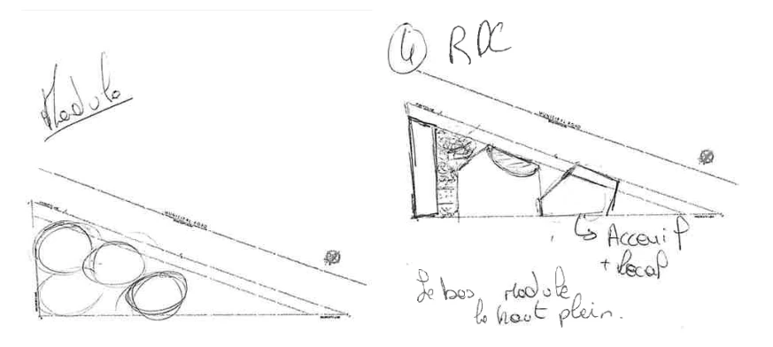
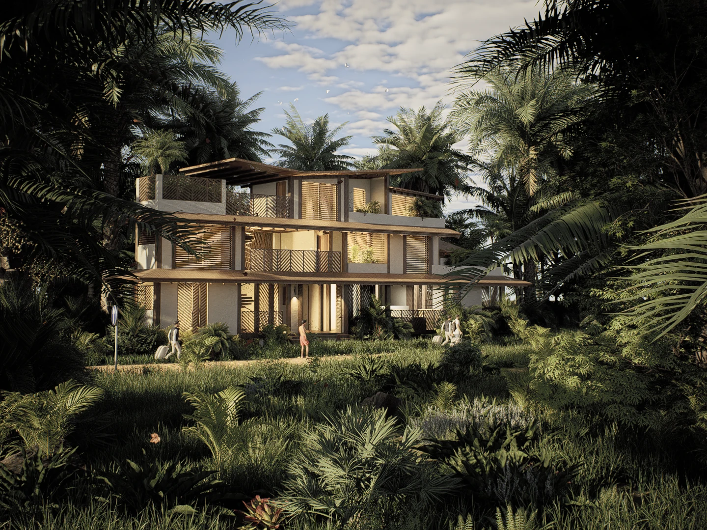
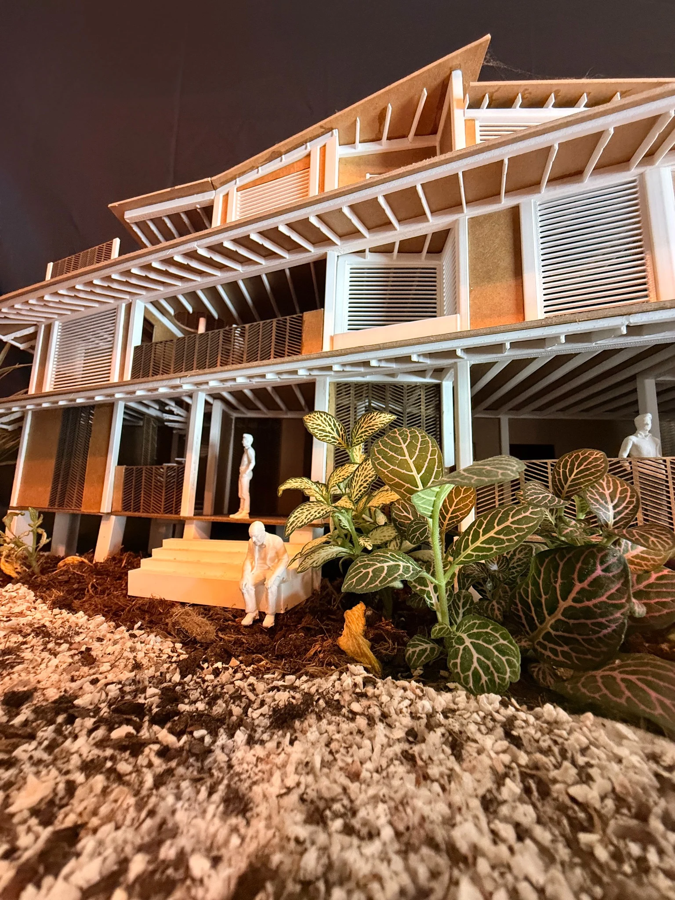

Hostel tropical · Siargao · 2026
Habiter l’archipel

Santa Fe
À Siargao, la bande habitée se dessine entre la végétation et le récif.

Les voies
Les axes relient l’intérieur de l’île au littoral. Une voie secondaire dessert la parcelle.

Le bâti
Les constructions se resserrent près du rivage et se dispersent vers l’intérieur.
Territoire et climat
La voie qui longe la parcelle triangulaire est à la fois l’entrée de l’hostel et une source de bruit. J’ai travaillé le seuil côté route pour que l’on puisse arriver en scooter ou avec une planche de surf, puis gagner à pied les espaces de repos.
La végétation existante donne les premières zones d’ombre. Entre les volumes, les ouvertures laissent passer l’air marin. Les débords de toiture prennent le relais des arbres pour que les parcours restent praticables pendant les averses.


Carnet de recherche
Dessiner d’abord les intervalles
En dessinant cet hostel, je suis parti de deux voyageurs qui rentrent à la même heure. L’un revient du surf et cherche un endroit pour rincer sa planche puis retrouver les autres. L’autre termine sa journée de travail et veut s’asseoir au calme. Comment leur faire partager une même adresse tout en leur laissant le choix de se rencontrer ?
Dans mes premiers croquis, trois cercles tiennent dans la pointe du terrain. En leur attribuant des usages, j’ai vu que la distance qui les séparait avait autant d’importance que leur surface. Rapprocher l’accueil de la cuisine, par exemple, change les rencontres possibles sur le chemin du repas.
La lecture de Life Between Buildings, de Jan Gehl, m’a amené à dessiner ces intervalles pour eux-mêmes. Le second croquis précise l’entrée, le coworking et les passages le long du jardin. C’est là que l’idée d’un « archipel habité » prend forme.
Croquis extraits du carnet, p. 21 et 23.

Rendus du projet
L’hostel de Santa Fe
Depuis le jardin, les coursives et les terrasses relient les trois niveaux de l’hostel. La perspective montre les lieux où l’on peut s’arrêter à l’ombre. L’élévation permet ensuite de suivre les passages d’un volume à l’autre.

Plans et coupe
Habiter entre les volumes
Au rez-de-chaussée, l’accueil, la cuisine et les espaces partagés donnent sur des parcours extérieurs. Dans le scénario du retour de surf, on passe du rinçage au jardin, puis au bar. La passerelle offre un endroit où s’arrêter, même lorsque la pluie interrompt le trajet.
En montant, le rythme change. Le premier étage réunit les dortoirs et les espaces calmes. Au dernier niveau, les terrasses prolongent les chambres privées. J’ai étudié une mezzanine pour y ménager un coin nuit plus retiré.

Construction
Du dessin à la maquette
En élévation, le bord d’un toit se lit comme un trait. Sur la maquette, on voit la profondeur d’ombre qu’il crée devant une chambre et la largeur de terrasse qu’il abrite. C’est à cette échelle que j’ai pu relire les rapports entre coursives, façades et végétation.
L’axonométrie éclatée permet ensuite de suivre les niveaux jusqu’à la charpente. En regardant la maquette et l’éclaté côte à côte, on retrouve les mêmes décalages entre les volumes.


Autre projet
Nuit flottante
Lago di Braies, Italie